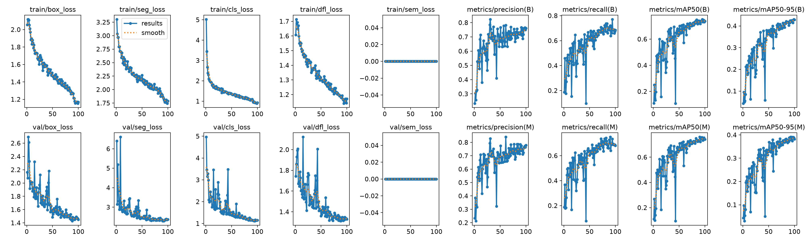
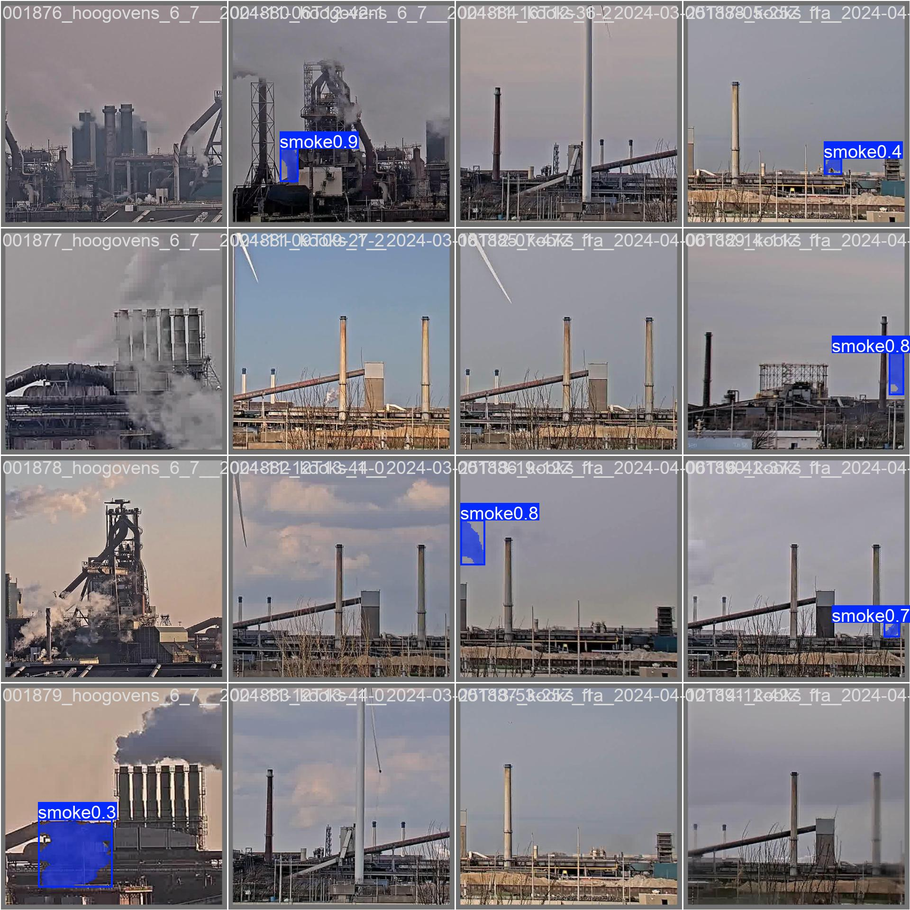
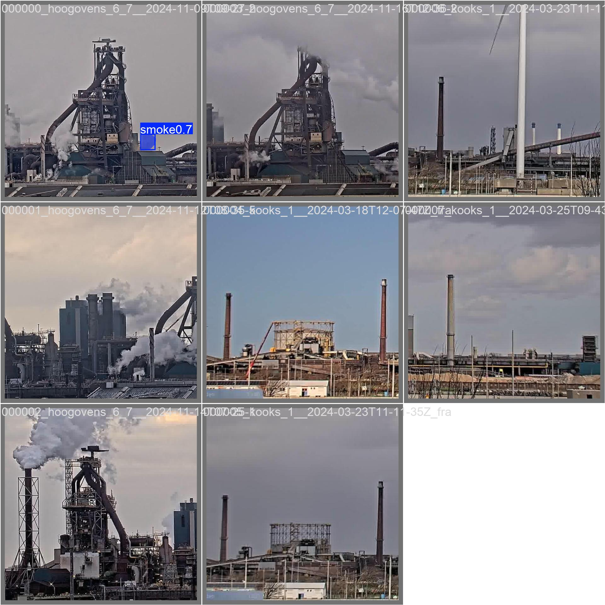

訓練結果怎麼看？以及下一步怎麼調
給第一次訓練煙霧分割模型的使用者：以本專案附上的 IJmond 訓練紀錄為案例，從數字、曲線、預測圖一路判斷到現場驗收。
1. 這份案例到底跑了什麼？
分析對象是附件 runs.zip 中的 runs/train/smoke_yolo11n 與 runs/val/smoke_yolo11_test。解壓後的可追溯檔案放在本頁同一資料夾的 assets/ijmond_run/，包括 args.yaml、results.csv、曲線、混淆矩陣與預測圖。
| 項目 | 本次設定 | 新手應該記住的意義 |
|---|---|---|
| 任務與模型 | segment、yolo11n-seg.pt | 同時學矩形框與煙霧的像素遮罩；n 是較小、較快的模型。 |
| 資料 | configs/ijmond.yaml，類別只有 smoke | 這不是多類別排放分類器，也不會自動理解你的煙囪位置。 |
| 訓練 | 100 epochs、batch 8、image size 640、GPU 0 | 每張輸入圖先縮放到約 640 尺寸；原圖中的小煙霧可能只剩很少像素。 |
| 停止與重現 | patience 25、seed 42、deterministic、AMP | 若驗證指標一段時間沒有改善，可能提前停止；seed 讓比較實驗較公平。 |
| 最佳化 | optimizer: auto、pretrained: true | 從預訓練模型微調，通常是合理的第一個基線。 |
| 影像增強 | mosaic 1.0、左右翻轉 0.5、scale 0.5、randaugment、erasing 0.4 | 能增加變化、抑制過擬合；但固定攝影機的現場不一定適合所有增強。 |
args.yaml 記錄了舊版 Ultralytics 產生的 runs/segment/runs/train/smoke_yolo11n 巢狀路徑。主專案目前的 scripts/train.py 已把相對輸出路徑固定在專案根目錄，因此新的訓練應到 runs/train/<name>；不要因為附件中的舊路徑而複製錯檔案。2. 四個常見指標，不要混在一起
| 指標 | 白話意思 | 在煙霧監測中代表什麼 |
|---|---|---|
| Precision（P） | 模型說「有煙」的結果，有多少是真的？ | 低通常代表誤報多；現場可能一直寄錯誤 Email。 |
| Recall（R） | 標註為「有煙」的目標，有多少被找到？ | 低通常代表漏報多；可能錯過短暫或很淡的煙。 |
| mAP50 | 用 IoU 0.50 判定框／遮罩大致重疊時的平均精度。 | 較寬鬆，適合看「大致有沒有找到」。 |
| mAP50-95 | 把 IoU 0.50 到 0.95 多個嚴格程度平均。 | 較能反映位置與遮罩邊界是否精準；通常會比 mAP50 低。 |
| F1 | Precision 與 Recall 的折衷：2PR/(P+R)。 | 用來找一個起始信心度門檻，但不能代替現場誤報／漏報成本分析。 |
對 segmentation，Box 與 Mask 會各有一組指標：Box 是矩形框，Mask 是像素輪廓。Ultralytics 對 Precision、Recall、IoU、AP、mAP 與 F1 的定義，可參考官方 Performance Metrics 說明；驗證 API 也能直接讀取 metrics.box.map、metrics.box.map50、metrics.seg.map 等結果，詳見官方 Validation 說明。
3. 本次數字的專家判讀
3.1 最後一輪與各指標最佳值
下表的「最後一輪」是 results.csv 的 epoch 100；「CSV 中最高」是每一欄單獨找出的最高點。它們可能發生在不同 epoch，所以不能把不同列的最高值拼成一個不存在的模型。
| 對象 | 最後一輪 P | 最後一輪 R | 最後一輪 mAP50 | 最後一輪 mAP50-95 | CSV 中最高值（epoch） |
|---|---|---|---|---|---|
| Box | 0.761 | 0.684 | 0.737 | 0.428 | P 0.823（31） R 0.771（94） mAP50 0.751（95） mAP50-95 0.430（99） |
| Mask | 0.779 | 0.681 | 0.741 | 0.382 | P 0.840（61） R 0.750（90） mAP50 0.760（90） mAP50-95 0.391（93） |
好消息：已學到目標
mAP50 在 0.74 左右，表示在較寬鬆的重疊標準下，模型已能找到相當一部分煙霧；P、R 也不是接近 0 的失敗基線。
主要瓶頸：精準定位
Box mAP50 從 0.737 降到 mAP50-95 的 0.428；Mask 更降到 0.382。這通常表示「有抓到，但框或遮罩不夠貼合」，不是單純沒有學會 smoke 類別。
遮罩比框更值得改善
最後一輪 Mask mAP50-95 比 Box 低約 0.047。對告警而言，若只需要判斷有無煙，先把漏檢與誤報做好；若要依面積比例告警，遮罩邊界就必須另外驗證。
F1 的起始門檻
Box F1 曲線最高點約在 conf 0.409，Mask 約在 0.404。可先以 --conf 0.35、0.40、0.45 做現場比較；不要把 0.40 當成永遠正確的答案。
3.2 曲線告訴我們什麼？

- 訓練 loss 整體下降，驗證 loss 也下降後在約 80–95 epochs 附近徘徊；看不出「剛開始就完全失敗」的跡象。
- mAP50-95 在後段仍有小幅波動，但大約 90 epochs 後改善已有限。增加到 150 epochs 可以做確認實驗，卻不應是第一個改善手段。
- 若下一次訓練出現 train loss 繼續下降、val loss 上升且驗證 mAP 下滑，才是較明顯的過擬合訊號；此時優先補充不同場景與 hard negative，而非只加正則化參數。
3.3 混淆矩陣的正確讀法
本次 validation 圖的固定評估點大約讀到：真正的 smoke 被配對到 smoke 113 次、被判成背景 31 次；背景被判成 smoke 56 次。test 圖大約是 smoke→smoke 96、smoke→background 28、background→smoke 41。用這些格子可粗略算出固定點的 object-level P/R，但它們不等於整張 results.csv 中每一個 epoch 的 P/R，因為 IoU 配對、置信度與評估流程不同。
| 圖 | True smoke → Pred smoke | True smoke → background | True background → Pred smoke | 粗略訊號 |
|---|---|---|---|---|
| validation | 113 | 31 | 56 | 漏掉一部分煙，也有不少背景誤觸發 |
| test | 96 | 28 | 41 | test 的固定點誤報略少，但仍不能直接換算成 Email 誤報率 |
3.4 預測圖比一個小數點更有用


本次圖像顯示：模型對部分煙霧可給出高信心度，但遮罩有時只覆蓋 plume 的局部，且部分標註煙霧沒有被找到。若部署程式用「遮罩面積比例」作第二層門檻，這種局部遮罩會讓 area 偏小，造成「畫面明明在冒煙，但 area=0 或低於門檻」的表面症狀。
4. 新手評估一個訓練結果的固定流程
- 先確認實驗可重現：保存
args.yaml、results.csv、資料集 YAML、Git commit、模型檔名與訓練日期。沒有這些，下一次無法知道改善是來自資料、參數還是偶然。 - 先看資料，不要先看分數：檢查正負樣本比例、空標籤、標註是否越界、polygon 是否自交、同一段影片的相鄰影格是否被分到 train 與 val。相鄰影格洩漏會讓分數看起來很漂亮。
- 看 train 與 val 曲線：兩者一起變好通常是學習；train 變好但 val 變差是過擬合；兩者都差是資料、尺度、標籤或任務設定有問題。
- 同時看 P、R、mAP50、mAP50-95：不能只報一個 mAP50。先問「漏報還是誤報？」再問「定位／遮罩是否夠準？」
- 用多個 conf 重新驗證：至少比較 0.25、0.35、0.40、0.50；繪製 P/R 與 F1，而不是看到一次推論結果就固定門檻。
- 逐張檢查預測：建立四個資料夾：正確找到、漏掉、背景誤報、遮罩不完整。每一類抽查 30–50 張，通常比再看一次 loss 更快找出原因。
- 最後才做現場 replay：用未參與訓練的現場影片，記錄煙霧事件數、漏報、誤報／小時、首次告警延遲、解除延遲與 Email 成功率。
5. 症狀 → 可能原因 → 第一個實驗
| 看到的症狀 | 較可能的原因 | 先做什麼 |
|---|---|---|
| train 與 val 都低，預測幾乎全空 | 資料路徑／標籤錯、煙霧太小、模型未正確載入、資料與任務不匹配 | 先看 labels.jpg、抽查 50 張 label 與模型 summary；確認是 -seg 權重。 |
| P 高、R 低 | 門檻過高、煙霧太淡／太小、訓練正例不夠 | 在同一驗證集降低 conf 做曲線；增加小煙、淡煙、逆光正例；提高有效影像尺度。 |
| P 低、R 高 | 背景相似、蒸氣／雲／反光被當煙、ROI 太寬或 conf 太低 | 加入 hard negative，縮小 ROI，並以現場每小時誤報成本選 conf。 |
| mAP50 不錯，但 mAP50-95 很低 | 框或 polygon 只大致重疊，邊界不準；或小目標在縮放時失真 | 先修標註邊界；以 crop／較大 imgsz 實驗；減少不符合現場的幾何增強。 |
| Mask 指標明顯低於 Box | 煙霧邊界模糊、polygon 規則不一致、mask 後處理／面積門檻敏感 | 訂定「煙霧要標到哪裡」的規則，複核遮罩；若只需有無煙，先不要把精細 area 當唯一告警條件。 |
| IJmond 分數高，現場影片幾乎全漏 | 場域差異、煙囪在畫面角落、現場影像壓縮／夜間／角度不同 | 建立現場標註資料與獨立驗證集，讓模型微調在目標攝影機的畫面上。 |
| 同一影片訓練很高，replay 卻為 0 | 訓練與推論 ROI 座標不一致、權重路徑錯、conf／area 過高、影像前處理不同 | 先用同一張原始影格跑「無 ROI、conf 0.10、area 0」的 smoke-only check，再逐項加回 ROI 與門檻。 |
6. 這個案例建議的調參順序
一次只改一到兩個因素，並為每次實驗取不同名稱。每一輪都使用相同的 validation／field hold-out，否則無法知道哪個改動有效。
| 實驗 | 變更 | 目的與判斷 |
|---|---|---|
| A：基線重現 | 維持 yolo11n-seg、640、batch 8、100 epochs | 先確認新輸出路徑、資料與附件的結果大致一致。 |
| B：提高小目標像素 | imgsz 960，視顯存改 batch 4 或 2 | 若煙囪只占畫面很小區域，通常比先換大型模型更直接；看 field recall 是否升高，並注意速度與記憶體。 |
| C：現場 crop | 在資料製作時把煙囪與 plume 的完整有效範圍裁成訓練圖；部署 replay 使用相同座標語意 | 避免目標在 1920×1080 中只剩很少像素；ROI 必須包含煙囪出口與可能飄出的 plume。 |
| D：固定鏡頭的增強 | 測試 mosaic=0、close_mosaic=0 或較保守的 scale；保留合理的亮度變化 | 大幅拼貼可能製造不自然的煙囪比例與背景；以 field hold-out 判定，不要只看 IJmond。 |
| E：現場微調 | 從 IJmond 或目前 best.pt 開始，以現場標註資料再訓練 30–80 epochs；降低學習率可作第二組對照 | 把資料分佈拉回實際攝影機。不要只拿同一段影片的連續影格做 train／val。 |
| F：模型大小 | 資料與尺度穩定後，才比較 yolo11s-seg 與 n 版 | 若 s 版的現場 recall／誤報顯著改善且速度可接受，才值得部署；否則 n 版可能更實用。 |
Ultralytics 設定文件說明 batch、image size、learning rate、patience、device 等參數；官方也提醒較大的 imgsz 可能改善小物件精度，但會增加計算成本。資料增強文件則說明增強可以擴大變化、降低過擬合，但每一種增強都要符合實際物理情境。
6.1 目前專案可直接執行的比較實驗
# A：基線／較長訓練確認（不一定會更好） python scripts/train.py --data configs/ijmond.yaml --model yolo11n-seg.pt \ --epochs 150 --imgsz 640 --batch 8 --device 0 \ --patience 30 --name smoke_yolo11n_e150 # B：小煙霧尺度實驗；顯存不足時把 batch 改成 2 python scripts/train.py --data configs/ijmond.yaml --model yolo11n-seg.pt \ --epochs 100 --imgsz 960 --batch 4 --device 0 \ --patience 25 --name smoke_yolo11n_img960 # 以相同 test split 驗證各組最佳權重 python scripts/validate.py \ --weights runs/train/smoke_yolo11n_img960/weights/best.pt \ --data configs/ijmond.yaml --split test --imgsz 960 --batch 4 \ --device 0 --name smoke_yolo11n_img960_test # 現場 replay：先比較 conf，不要同時改所有條件 python scripts/replay_video.py --weights models/best.pt \ --source data/raw/field/sample.mp4 --output data/runtime/replay_conf035.mp4 \ --conf 0.35 --area 0.005 --sample-seconds 1.0 --roi "" --device 0
若要試 mosaic、lr0 等目前包裝腳本沒有暴露的 Ultralytics 參數，可以用已安裝的 yolo segment train ... 入口或在 scripts/train.py 明確加入參數；請把完整命令與輸出 args.yaml 一起保存。
7. 針對「煙囪在左上角、只占小區域」的資料策略
這是本專案最值得優先處理的問題之一。原始 1920×1080 影像中，若煙囪與 plume 只占不到 1/20，縮放到 640 後，煙霧的有效像素可能非常少；模型即使在 IJmond 的 cropped image 表現不錯，也可能在現場漏掉。
正確裁切
把煙囪出口、正常飄散方向與足夠背景一起保留。不要只裁煙囪金屬結構，也不要讓 plume 一出 ROI 就被截斷。
訓練／推論一致
若訓練資料是 crop 後的圖，replay 也要先 crop 再推論；若模型訓練的是完整畫面，就不要把座標誤當成 crop 後座標。
多種煙況
收集淡煙、濃煙、短暫煙、向左／向右飄、夜間、逆光、雨霧、蒸氣與無煙背景；不要只截取連續相似影格。
保持負樣本
加入同一煙囪在無煙時的影格，以及雲、蒸氣、熱浪、反光、鳥、灰塵等 hard negative，否則模型會把固定背景當 smoke。
標註規則要先寫成一句話，例如「標註肉眼可見且從煙囪出口連續延伸的煙霧區域；不把天空雲朵與熱浪標成 smoke」。同一類邊界在所有影片一致，Mask mAP50-95 才有意義。IJmond 的官方資料頁說明它同時包含 raw／cropped 工業影像與 polygon 標註；本專案可用它做預訓練，但現場資料仍是降低 domain shift 的關鍵。
7.1 左右翻轉要不要用？
左右翻轉會同步翻轉影像與 polygon，是合理的「幾何標註增強」；但固定鏡頭的工廠不一定左右對稱。若煙霧總是向右飄、光線或管線只會出現在一側，翻轉可能製造不真實樣本。建議把它當作獨立 ablation：只加到 train，不要加到 val／test，並比較現場 hold-out 的 recall、誤報率與延遲。
8. 現場驗收：把「模型分數」換成「告警表現」
IJmond test 的 mAP 是資料集內的物件層級指標；真正要交付的是「煙霧事件是否有被通知」。建立一份完全不參與訓練的現場影片清單，人工標出每個煙霧事件的開始／結束時間，再以同一組影片比較候選模型。
| 現場指標 | 怎麼算 | 為什麼重要 |
|---|---|---|
| 事件召回率 | 有告警的真實煙霧事件 ÷ 全部真實煙霧事件 | 比逐影格 recall 更接近使用者感受；短暫漏幾個 frame 不一定等於漏掉整個事件。 |
| 誤報率 | 無煙時錯誤告警次數 ÷ 監測小時（或天） | Email 是否會被誤報淹沒，通常比 IJmond 的背景格子更直接。 |
| 首次告警延遲 | 人工事件開始到第一封 Email／事件紀錄的秒數 | 由抽樣間隔、positive frames、RTSP 延遲與 SMTP 延遲共同決定。 |
| 解除延遲 | 煙霧消失到狀態回 NORMAL 的秒數 | 避免煙霧短暫被遮擋造成反覆寄信，也避免警報長時間卡住。 |
| 證據品質 | 抽查告警圖的 ROI、框、mask 與時間戳是否足以人工確認 | 現場不是只需要一個 0／1；證據能幫助值班人員判斷真假。 |
9. 一頁式決策清單
如果你只能做三件事
- 從現場影片建立依「影片／日期／攝影機」切分的正負樣本，補齊小煙、淡煙與 hard negative。
- 用 crop 或較大
imgsz讓左上角煙霧保留更多像素，確認訓練與 replay 的 ROI 座標一致。 - 用未參與訓練的現場影片，固定模型後掃描 conf、area、positive frames，直接用事件召回率與誤報／小時選參數。
什麼時候該改資料，而不是改參數？
當預測圖中漏掉的煙況在訓練資料裡很少、誤報背景沒有被標成負例、polygon 邊界前後不一致，或 IJmond 與現場的攝影機角度／畫面比例不同時，應先改資料。參數只能改變模型如何學，不能替模型看過不存在的現場情況。
什麼時候才值得換 yolo11s-seg？
先完成標註稽核、現場 crop／尺度實驗與現場微調。若 n 版在相同資料與同一 hold-out 上仍有穩定的漏檢，且 s 版能提升事件召回率而推論速度、CPU／GPU 記憶體仍可接受，再換模型；否則換大模型常常只是把資料問題藏起來。
10. 可追溯附件
- args.yaml：這次訓練的完整設定。
- results.csv：100 epochs 每輪的 loss 與 Box／Mask 指標。
- results.png：loss、P、R、mAP、learning rate 曲線。
- Box PR、Mask PR、Box F1、Mask F1：門檻與品質的關係。
- validation 混淆矩陣、test 混淆矩陣：固定評估點的物件配對摘要。
- labels.jpg、標註範例、validation 預測、test 預測：資料與視覺品質檢查。
{kind=link}
{kind=link}
{kind=link}
{kind=link}
{kind=link}
{kind=link}
{kind=link}
{kind=link}
{kind=link}
{kind=link}
{kind=link}
11. 參考資料
以下優先使用資料集原始頁面與 Ultralytics 官方文件；官方文件會隨版本更新，閱讀時請把本指南的版本、模型與參數一併保存。
- Ultralytics：YOLO Performance Metrics：Precision、Recall、IoU、AP、mAP、F1 與圖表解讀。
- Ultralytics：Model Validation：mAP50、mAP50-95 與驗證 API。
- Ultralytics：Configuration：batch、imgsz、learning rate、patience、device 與訓練／驗證設定。
- Ultralytics：Data Augmentation：mosaic、翻轉、縮放等增強的用途與取捨。
- IJmond Industrial Smoke Segmentation Dataset（Figshare）：資料內容、標註、切分與 CC BY 4.0 授權。
- IJmond technical report（arXiv）：資料集與工業煙霧分割的原始技術報告。
本指南建立於本次附件的訓練紀錄與上述公開資料，最後覆核日期：2026-07-19。模型結果不是法規排放量測，也不應取代安全聯鎖、人工確認或法定檢測。